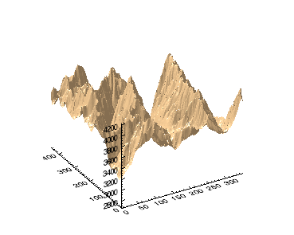
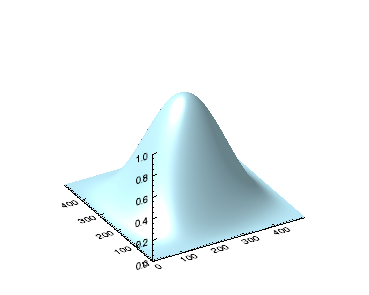

You can create surface graphics using the SURFACE function. In this topic, we will use the SURFACE function using elevation data taken from the Maroon Bells area of the Rocky Mountains in Colorado.
The following example displays a very simple surface graphic:

To reproduce this surface, enter the following lines on the IDL command line:
RESTORE, FILEPATH('marbells.dat', $
SUBDIRECTORY=['examples', 'data'])
s = surface(elev, COLOR='burlywood')
The following simple example uses data that you create at the command line:

hanning=hanning(500,500)
surf_hann = SURFACE(hanning, COLOR='light_blue')
| • | COLOR - defines the surface fill color. You can use basic color names or RGB values. See Formatting IDL Graphics Symbols and Lines for full information. |
| • | Change Graphics Properties |
| • | Multiple Graphics in One Window |
| • | Saving Graphics |
| • | Surface with Contour Lines |
| • | SURFACE |
| • | Graphics |
| • | Formatting IDL Graphics Symbols and Lines |